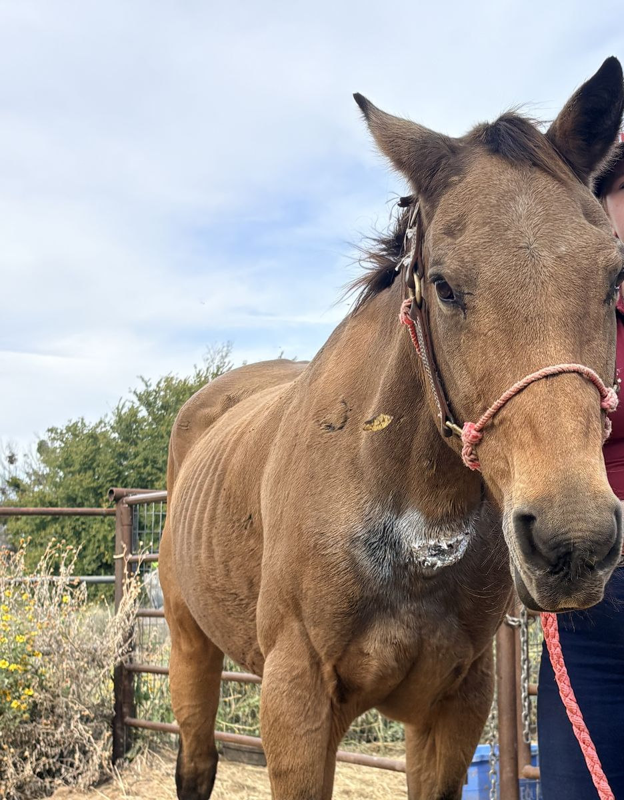
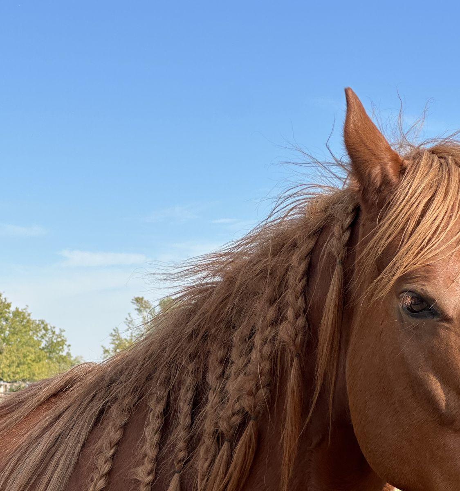

Home › The horses
The herdThe horses at the ranch
Every one of them has a page that follows it from the day it arrived. Names and stories are Braxton's to add; the photos are from the ranch on 23 October 2026.

The chestnut with the blaze
Chestnut, white blaze

The bay with the lightning blaze
Bay, jagged white blaze

The bay with the star
Bay, small star

The dark bay
Dark bay

The paint
Brown and white paint, blue eye

The palomino pony
Palomino pony

The little pinto
Miniature pinto

The cream horse
Cream, red halter

The buckskin
Buckskin, scar on the shoulder

The gray
Gray, red halter

The chestnut with the braided mane
Chestnut, braided mane
Help a horse
Give once, or a little every month
Every gift goes to hay, feed and care, and you'll hear back about the horse it helped.
Updates from the barn
Hear how the horses are doing
One email a month, with the horse you helped and what it cost. No more than that.